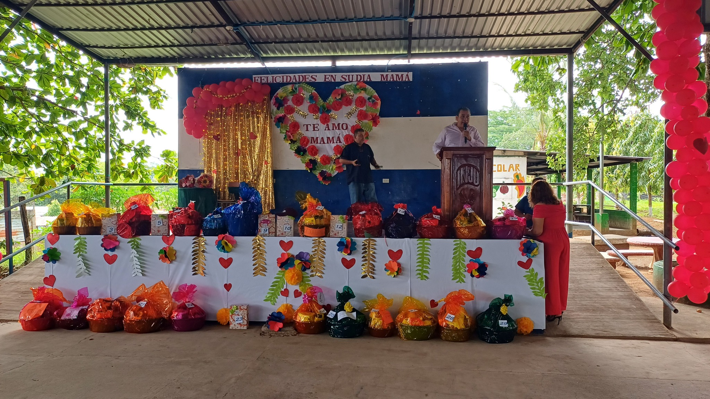

Entrada Principal
Instalaciones del INJU
La entrada principal del Instituto Nacional de Jucuapa, donde diariamente recibimos a nuestros estudiantes para forjar su futuro académico.
Jardín y pasillo floral
Un espacio verde para la tranquilidad y el aprendizaje
Nuestro jardín y pasillo floral ofrecen un espacio natural lleno de color y frescura, ideal para el descanso, la contemplación y el disfrute de la naturaleza dentro de nuestras instalaciones
Pasillos Naturales
Un espacio verde para la tranquilidad y el aprendizaje
Nuestros pasillos naturales ofrecen un ambiente fresco y sereno, perfecto para conectar con la naturaleza y disfrutar de un paseo al aire libre.
Cancha y salón de usos múltiples
Centro de actividades
Nuestra Cancha y salón de usos múltiples ofrece un espacio ampliado para eventos y la practica de deportes.

Patio Trasero
Área Recreativa
Espacio central donde los estudiantes se reúnen durante los recreos y actividades especiales.

Laboratorio de Cómputo
Tecnología Educativa
Laboratorio de cómputo completamente equipado para las clases de Desarrollo de Software y otras materias técnicas.
Taller Mecánico
Mantenimiento Automotriz
Taller especializado donde los estudiantes de Mantenimiento Automotriz practican con herramientas profesionales.

Laboratorio de Salud
Atención Primaria
Laboratorio equipado para las prácticas de los estudiantes de Atención Primaria en Salud.
Estudiantes del Instituto Nacional de Jucuapa, visitaron la Ex Casa Presidencial, con el objetivo de motivar a los estudiantes a egresar este año como Bachilleres para que sigan sus estudios superiores por medio de una Beca.
Estudiantes del Instituto Nacional de Jucuapa, visitaron la Ex Casa Presidencial, con el objetivo de motivar a los estudiantes a egresar este año como Bachilleres para que sigan sus estudios superiores por medio de una Beca.
Estudiantes del Instituto Nacional de Jucuapa, visitaron la Ex Casa Presidencial, con el objetivo de motivar a los estudiantes a egresar este año como Bachilleres para que sigan sus estudios superiores por medio de una Beca.
Estudiantes del Instituto Nacional de Jucuapa, visitaron la Ex Casa Presidencial, con el objetivo de motivar a los estudiantes a egresar este año como Bachilleres para que sigan sus estudios superiores por medio de una Beca.

Feria de Ciencias
Junio 2025
Imágenes de los trabajos presentados por los estudiantes de los Primeros años de Bachillerato General en la asignatura de Ciencia y Tecnología.
Feria de Ciencias
Junio 2025
Imágenes de los trabajos presentados por los estudiantes de los Primeros años de Bachillerato General en la asignatura de Ciencia y Tecnología.
Feria de Ciencias
Junio 2025
Imágenes de los trabajos presentados por los estudiantes de los Primeros años de Bachillerato General en la asignatura de Ciencia y Tecnología.

Feria de Ciencias
Junio 2025
Imágenes de los trabajos presentados por los estudiantes de los Primeros años de Bachillerato General en la asignatura de Ciencia y Tecnología.
Feria de Ciencias
Junio 2025
Imágenes de los trabajos presentados por los estudiantes de los Primeros años de Bachillerato General en la asignatura de Ciencia y Tecnología.
Feria de Ciencias
Junio 2025
Imágenes de los trabajos presentados por los estudiantes de los Primeros años de Bachillerato General en la asignatura de Ciencia y Tecnología.
Semana de Nutrición 2025
Abril 2025
Evento dedicado a promover hábitos alimenticios saludables entre los estudiantes y la comunidad educativa.
Semana de Nutrición 2025
Abril 2025
Evento dedicado a promover hábitos alimenticios saludables entre los estudiantes y la comunidad educativa.
Semana de Nutrición 2025
Abril 2025
Evento dedicado a promover hábitos alimenticios saludables entre los estudiantes y la comunidad educativa.
Semana de Nutrición 2025
Abril 2025
Platillos saludables preparados por nuestros estudiantes durante la Semana de Nutrición 2025.
Semana de Nutrición 2025
Abril 2025
Platillos saludables preparados por nuestros estudiantes durante la Semana de Nutrición 2025.
Graduación 2024
Noviembre 2024
Ceremonia de graduación de la promoción 2024, celebrando el logro académico de nuestros bachilleres.
Graduación 2024
Noviembre 2024
Ceremonia de graduación de la promoción 2024, celebrando el logro académico de nuestros bachilleres.
Graduación 2024
Noviembre 2024
Ceremonia de graduación de la promoción 2024, celebrando el logro académico de nuestros bachilleres.
Graduación 2024
Noviembre 2024
Ceremonia de graduación de la promoción 2024, celebrando el logro académico de nuestros bachilleres.
Graduación 2024
Noviembre 2024
Ceremonia de graduación de la promoción 2024, celebrando el logro académico de nuestros bachilleres.
Graduados Técnicos 2024
Diciembre 2024
Momento especial donde los graduados de especialidades técnicas reciben sus diplomas y reconocimientos.
Juegos Intramuros INJU 2025.
Marzo 2025
Campeones en futbol masculino de los juegos Intramuros INJU 2025.
Juegos Intramuros INJU 2025.
Marzo 2025
Subcampeones en futbol masculino de los juegos Intramuros INJU 2025.
Juegos Intramuros INJU 2025.
Marzo 2025
Campeones en futbol femenino de los juegos Intramuros INJU 2025.
Juegos Intramuros INJU 2025.
Marzo 2025
Subcampeones en futbol femenino de los juegos Intramuros INJU 2025.
Equipo de jovenes
Febrero 2025
El equipo de jóvenes estudiantes del Instituto Nacional de Jucuapa, que forman parte del La Liga Atlética Policial en representación del puesto Policial de Jucuapa.
Clase de Programación
Desarrollo de Software
Estudiantes de Desarrollo de Software trabajando en sus proyectos de programación con tecnologías modernas.
Práctica de Mecánica
Mantenimiento Automotriz
Estudiantes de Mantenimiento Automotriz aprendiendo diagnóstico y reparación de sistemas vehiculares.

Clase de Contabilidad
Administrativo Contable
Estudiantes de Administrativo Contable practicando ejercicios de contabilidad y finanzas empresariales.
Práctica Médica
Atención Primaria en Salud
Estudiantes de Salud practicando técnicas de primeros auxilios y atención primaria.
Desfile Patrio
Septiembre 2025
Estudiantes participando en el desfile conmemorativo de las Fiestas Patrias.
Porras y Bastoneros
Septiembre 2025
Nuestras porras y bastoneros animando con entusiasmo el desfile patrio.
Abanderados y escoltas
Septiembre 2025
Nuestros Abanderados y escoltas representando con orgullo a nuestra institución en el desfile patrio.
Desfile Patrio
Septiembre 2025
Estudiantes participando en el desfile conmemorativo de las Fiestas Patrias.
Desfile Patrio
Septiembre 2025
Nuestro Director, reina y autoridades liderando el desfile patrio con orgullo y compromiso institucional.
cachiporras INJU
Septiembre 2025
cachiporras participando en el desfile conmemorativo de las Fiestas Patrias.
Banda INJU
Septiembre 2025
Banda del INJU participando en el desfile conmemorativo de las Fiestas Patrias.
Acto Cívico Patrio
Septiembre 2025
Ceremonia cívica en honor a las Fiestas Patrias con participación de toda la comunidad educativa.
Acto Cívico Patrio
Septiembre 2025
Ceremonia cívica en honor a las Fiestas Patrias con participación de toda la comunidad educativa.

Acto Cívico Patrio
Septiembre 2025
Ceremonia cívica en honor a las Fiestas Patrias con participación de toda la comunidad educativa.
Presentaciones Culturales
Septiembre 2024
Estudiantes presentando bailes folclóricos y actividades culturales durante las Fiestas Patrias.
Presentación de Candidatas
Julio 2025
Presentación de las candidatas a reina del INJU 2025/26.

Reina INJU 2025/26
Julio 2025
Nuestra nueva reina del INJU 2025/26, símbolo de belleza, inteligencia y liderazgo estudiantil.
Festival de Danza Moderna
Abril 2025
Presentación de danza moderna por parte de nuestros estudiantes, mostrando su talento y creatividad en el escenario.
Festival de Danza Moderna
Abril 2025
Todos los grupos de danza moderna presentando su talento y creatividad en el escenario.
Festival de Danza Moderna
Abril 2025
Campeones de danza moderna INJU 2025.
Celebración del Día del Libro con actividades literarias y culturales para fomentar la lectura entre los estudiantes.
Inicio del año escolar 2025
Enero 2025
Primer día de clases del año escolar 2025, dando la bienvenida a nuevos y antiguos estudiantes.

Día de la Madre
Mayo 2025
Celebración especial en honor a las madres de nuestra comunidad educativa con presentaciones y actividades dedicadas a ellas.